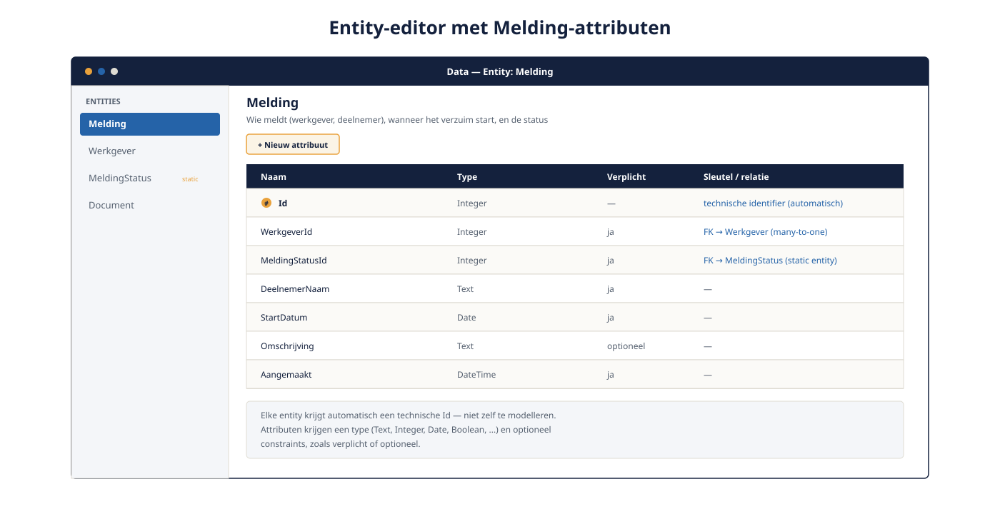
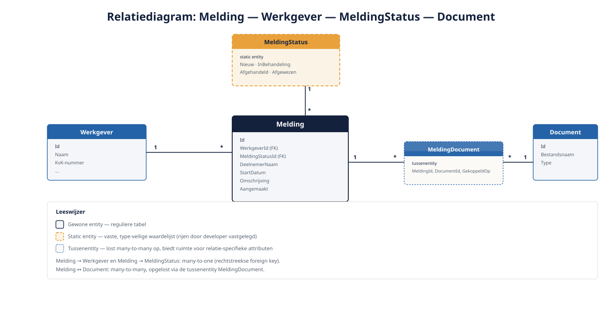

Deel 3 — Datamodel
Slidedeck · Ductus-cursus OutSystems · Niveau 1 — Fundament · deel 3 van 30 · 13 slides
Slide 1 — Title: OutSystems: Fundament
OutSystems: Fundament
Deel 3 — Datamodel
Slide 2 — Bullets: Entities: de kern
Entities: de kern
- OutSystems-representatie van een tabel
- Automatische technische Id
- Attributen met type en constraints
- Voor Verzuimmeldingen:
Melding,Werkgever

Slide 3 — Section: Static entities
Static entities
Slide 4 — Bullets: Vaste waardelijsten, type-veilig
Vaste waardelijsten, type-veilig
- Rijen door developer vastgelegd, niet door eindgebruiker
MeldingStatus: Nieuw, InBehandeling, Afgehandeld, Afgewezen- Voorkomt typefouten die losse tekstvelden wél toelaten
Slide 5 — Opdracht: Opdracht 3.1 — Entity of static entity?
Opdracht 3.1 — Entity of static entity?
Drie gegevens van Verzuimmeldingen.
Entity, static entity, of attribuut?
→ Werkboek 3.1
Slide 6 — Section: Relaties
Relaties
Slide 7 — Bullets: Foreign keys, visueel
Foreign keys, visueel
- Many-to-one:
Melding→Werkgever - Many-to-many: bijna altijd een tussenentity
- Tussenentity geeft ruimte voor relatie-specifieke attributen

Slide 8 — Opdracht: Baan A / Baan B
Baan A / Baan B
A — Datamodel bouwen in Service Studio
B — Datamodel bouwen in ODC Studio
→ Werkboek, eigen baan
Slide 9 — Section: Mapping naar de fysieke database
Mapping naar de fysieke database
Slide 10 — Bullets: Automatisch, maar niet vrijblijvend
Automatisch, maar niet vrijblijvend
- Platform genereert tabellen, kolommen, indexen
- Normalisatie en structuur blijven ontwerpkeuzes
- O11: directe databasetoegang mogelijk
- ODC: ontsluiting primair via entity-laag/integraties
Slide 11 — Opdracht: Reflectieopdracht 3.2
Reflectieopdracht 3.2
Waarom een tussenentity, ook als many-to-many technisch kan?
→ Werkboek 3.2
Slide 12 — Bullets: Kernpunten deel 3
Kernpunten deel 3
- Entities = tabellen; static entities = type-veilige vaste lijsten
- Relaties zijn foreign keys; tussenentity bij many-to-many
- Fysieke mapping automatisch, ontwerp blijft aan jou
- O11: directe DB-toegang mogelijk; ODC: via entity-laag/integraties
Slide 13 — Section: Volgende deel: Logica
Volgende deel: Logica